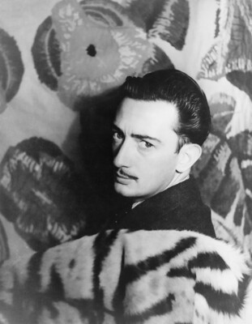
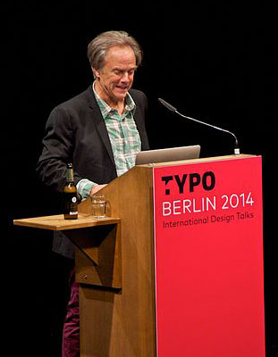
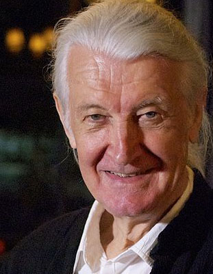

![[an image of Håkon Wium Lie.]](img/Håkon_Wium_Lie.jpg)
I think there’s a lot of people that are neglected in art.
cite= "https://www.anothermag.com/art-photography/11822/basquiat-isms-jean-michel-basquiat-best-quotes-larry-warsh-lee-jaffe"

Image by Eleanor Jaekel at https://www.flickr.com/photos/plumsaplomb/.

And with it all, good design's not about what medium you're working in, it's about thinking hard about what you want to do and what you have to work with before you start.
cite= "https://www.azquotes.com/author/53746-Susan_Kare"
Any program is only as good as it is useful.
cite= "https://www.brainyquote.com/authors/linus-torvalds-quotes"

Perfect typography is more a science than an art.
cite= "https://www.azquotes.com/author/40524-Jan_Tschichold"